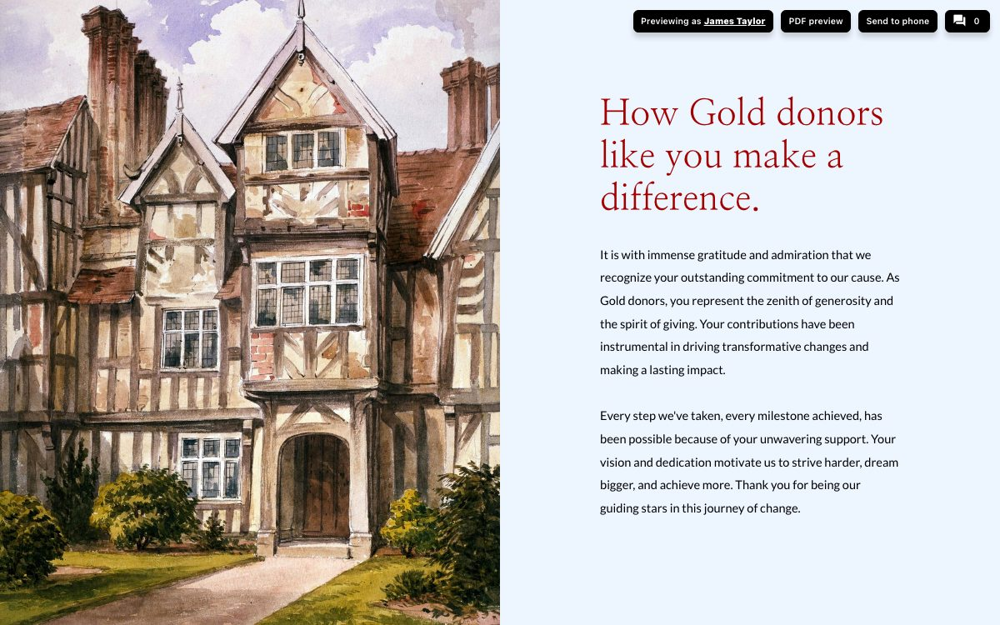

One report, written for every donor.
Upload your constituents, drop their details into your report, and show each giving level the story that fits. Then send one link, and every donor opens a report with their own name on it.
Read the transcript
One report, written for every donor. With Storyraise personalization, each reader sees their own name, their own giving, and the story that fits them.
It starts on the Constituents tab. Choose Add constituents, then upload a CSV file, or connect your CRM so your records stay in sync.
Your file needs First Name, Last Name, and Email. Every other column, like Donor Level or Gift Amount, comes in as a custom field. Map your columns, then Import constituents.
Open anyone to see their profile. Each field is a variable, like donor level, ready to drop into a report.
In the report, type a variable right into your text, between double at signs. Dear first name becomes Dear Emily, with her own gift and giving level filled in too.
To show a section to some donors only, select it and open Use Data. Under Show When, pick donor level, is, Gold. Silver and Bronze get their own sections, set up the same way.
Open web preview and choose who you are previewing as. Emily Wilson is a Bronze donor, so she sees her name and the Bronze story. Switch to James Taylor, and the same report turns Gold.
Ready to send? Publish your report, then open Share. Tell us which email platform you use, and Get report link. Your platform fills in each donor's email, so everyone opens their own report.
Or let us send it for you. Storyraise Send drafts the email, with a personalized View the Report button. Pick your recipients, like the donors you just imported, then schedule it and send.
Upload your donors, add a few variables, and every reader gets a report that feels written for them.
Explore it yourself
Names, gifts, and email addresses in this demo are fictional, and nothing you click imports, saves, or sends anything.
See it on a bigger screen

How it works
Bring in your constituents
Upload a CSV file with First Name, Last Name, and Email (download the template), or connect your CRM. Every other column, like donor level or gift amount, comes in as a custom field.
Personalize the report
Type variables like @@first_name@@ into any text. Use Show When to give each giving level its own section, so Gold, Silver, and Bronze donors each read the story meant for them.
Preview, then send one link
Preview as any donor before anything goes out. Publish, then Share gives you one personalized link for your email platform, or let Storyraise Send draft and send the email for you.
Same report, a different story for each level
Write a thank-you for each giving level once. Show When decides which one each donor sees.
Emily Wilson, Bronze donor
- Prepared for Emily Wilson.
- Sees: How Bronze donors like you make a difference.
- The Gold and Silver sections stay hidden for her.
James Taylor, Gold donor
- Prepared for James Taylor.
- Sees: How Gold donors like you make a difference.
- The Silver and Bronze sections stay hidden for him.
Want each donor to see stories from the people their gift supports? See how to collect stories and show them in a report.
Questions teams ask
Which columns does my CSV file need?
First Name, Last Name, and Email. Everything else is optional and comes in as a custom field: a column named Donor Level becomes the variable @@donor_level@@. Importing constituent data has a template to start from.
Which plan includes personalization?
Personalization is part of the Precision plan: the Constituents tab, the Use Data tab with Show When, Previewing as, and the personalized link in Share. On other plans, the Constituents tab offers to request access.
What if a donor's level is blank or spelled differently?
Show When's is matches the value exactly, capitals included, so Gold and gold are different. A donor whose level matches none of your sections sees none of them. Add a fallback section set to Show When donor_level is, with the value left empty, and it shows only to donors with no level.
Our donors live in a CRM. Do we still need a CSV?
No. Connect Raiser's Edge NXT, Salesforce, Bloomerang, and other CRMs under Connections and your constituents sync on a schedule. Synced fields become variables the same way CSV columns do; edit those records in your CRM so the next sync keeps your change. See every supported system.
What if I upload the same person twice?
Constituents are matched by email, so a second upload with the same email updates that person's fields instead of adding a duplicate.
What does a variable show when a donor has no value for it?
Nothing. The variable is left blank, so write sentences that still read well without it, or use Show When to show that sentence only when the field has a value.
What happens if someone opens the report without a personalized link?
Variables show exactly as you typed them, like @@first_name@@, and every Show When section appears. So always send the personalized link from Share, or send with Storyraise Send, and each donor gets their own version. Personalized links explains how the link works.
Which email platforms work with the personalized link?
The personalized link, sometimes called a dynamic link, works with any platform that can put a recipient's email address into a link. Tell Share which platform you use and it builds the link with that platform's merge tag; check the text after ?for= before you send. Personalized links lists the common ones.
Will my test views count in Analytics?
Not if you share it with your team the right way. To check donor versions, tick Sending to my team in Share before you copy the link. Copy team link opens the report without anyone's details. Visits from either are left out of your report's numbers. Analytics exclusion has more.